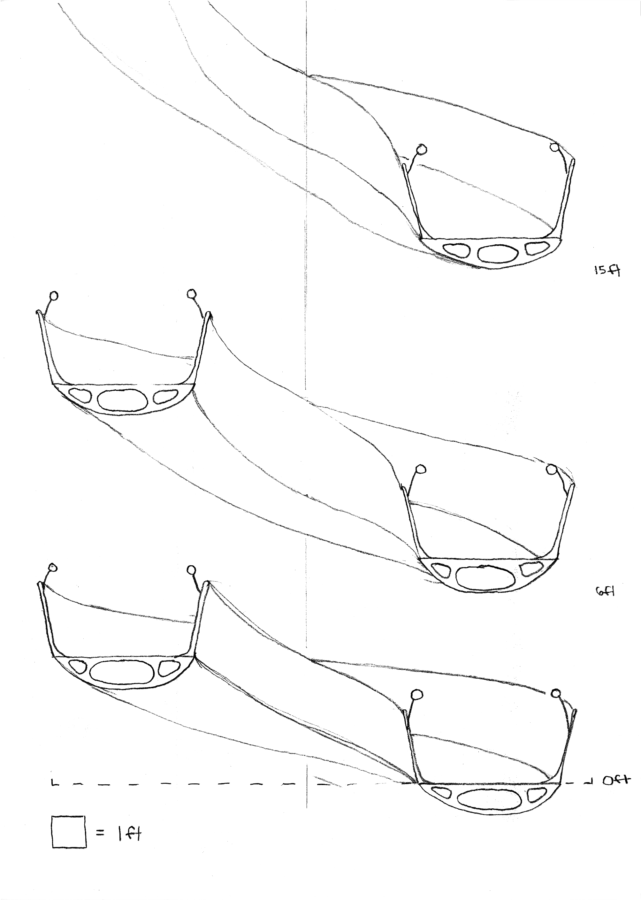
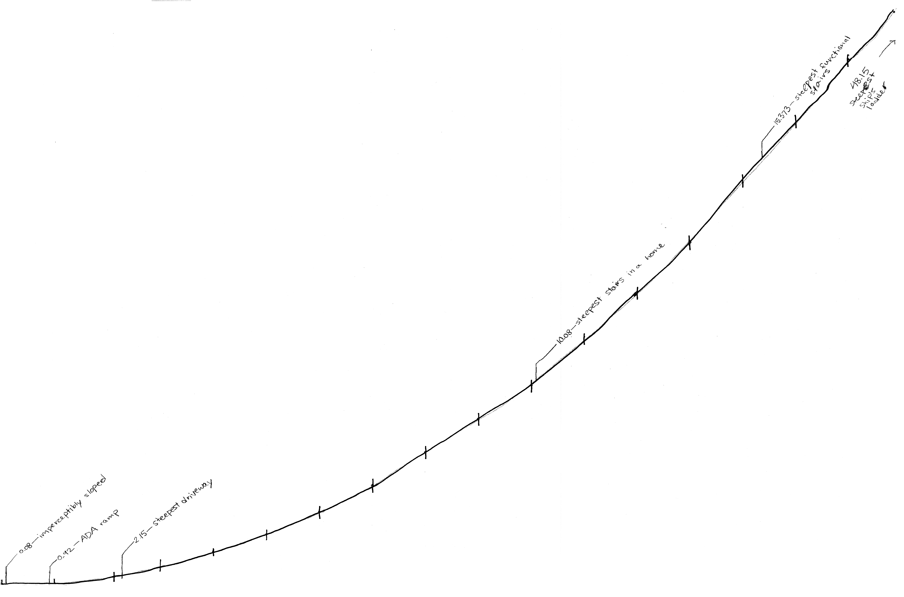
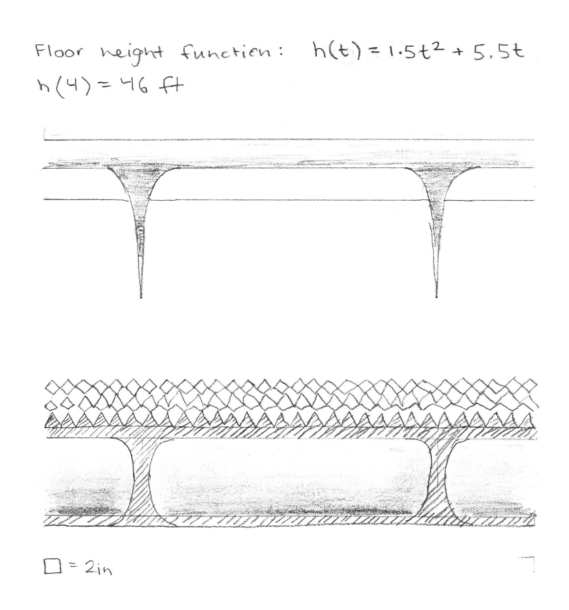

ELI HARRELL
Touch Ascent
a hand ~ 2D project
What would a room that stimulated your sense of balance look like?
Perhaps a long ramp of different textures and slopes, gaining in traction and in steepness as one ascends; a "touch ascent." This was a chance to do some real architectural speculation, and to work on drawing at different scales simultaneously.
click images to view them at full size.
|
Sectional view of the increasingly steep slope, showing handrails and interior structure of the ramp. See below for algebraic definition of the height of the ramp at a given number of rotations around it. In the example to the left, after four complete rotations, one stands 46 feet above where they began. |
 |
| A visual comparison of the slope of this ramp as it compares to standards for ADA compliance, driveways, stairs, and ladders. Note its smooth integration between these typically very different modes of ascent. |  |
|
Click to view this at full size. Illustration of the floor texture of the four turns of the ramp, to scale. |

|
| Section to scale with a strange child. I play with scale here, simultaneously displaying the ramp at 1:6 and the spikes at 4:1. |

|
| Lengthwise section of a portion of the ramp, showing handrail supports, and the textured floor material which rises along the walls of the ramp as well. |  |
| An initial idea which incorporated three different sensory experiences simultaneously: steepness/friction (proprioception), sound (hearing), and temperature. In this sketch, I began to visualize what a continuous journey through a sensory field would look like as architecture. |

|
| Sketching out section views of the ramp structure. The second box toward the top shows how the slope and radius of the spiral decreases as one ascends it. Along the right side, an unrolled view of the surface of the ramp shows how it provides more and more traction as one ascends (seen bottom to top, starting at the arrow). |

|